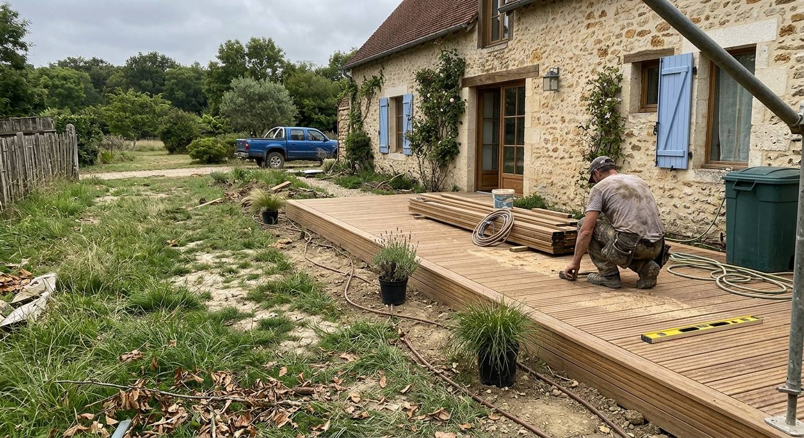
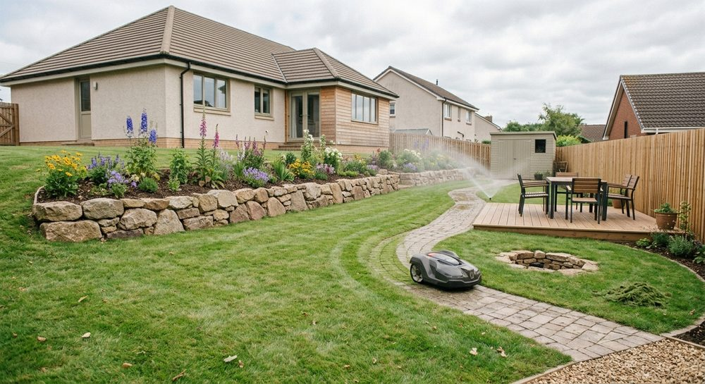
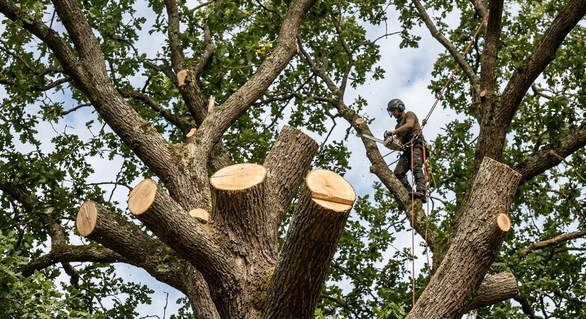
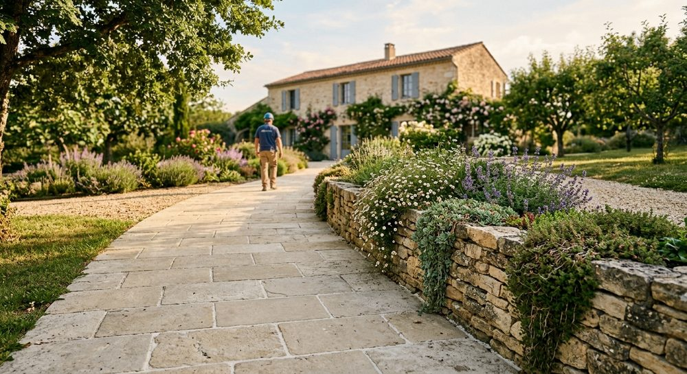

Architecture paysagère
Artisan spécialisé dans la création d'espaces verts, nous donnons vie à vos idées, même les plus originales, dans le respect des bonnes pratiques.

Création de jardins, entretien, élagage et aménagement d'allées : ARESPACE VERT vous accompagne de l'idée jusqu'au résultat.
Une équipe d'artisans paysagistes qui met son savoir-faire au service de vos projets, petits ou ambitieux.
Artisan spécialisé dans la création d'espaces verts, nous donnons vie à vos idées, même les plus originales, dans le respect des bonnes pratiques.

Bien entretenir, c'est la garantie d'un espace vert de qualité :

Maîtriser la pousse des arbres, ça nous connaît ! Notre équipe s'occupe de vos arbres dans le respect des saisons.
Une allée n'est pas qu'un passage : elle guide le regard et structure tout l'espace. Nous l'aménageons en cohérence avec vos plantations, vos murets et l'architecture de votre maison.

Faites-nous part de vos envies : nous nous appliquons à les mettre en œuvre.
Vos idées, vos usages, vos envies : nous vous écoutons et regardons votre jardin ensemble.
Nous imaginons un aménagement fidèle à vos attentes, dans le respect des bonnes pratiques.
Création, entretien, élagage : le chantier est mené avec soin jusqu'au dernier détail.
Entreprise de paysagisme installée à Garancières, dans les Yvelines. Notre longue expérience de l'entretien de jardin et de la création d'espaces verts nous permet de vous proposer des prestations de qualité.
Ne laissez pas votre jardin sans entretien : contactez-nous, nous vous répondons vite.
06 80 89 88 96